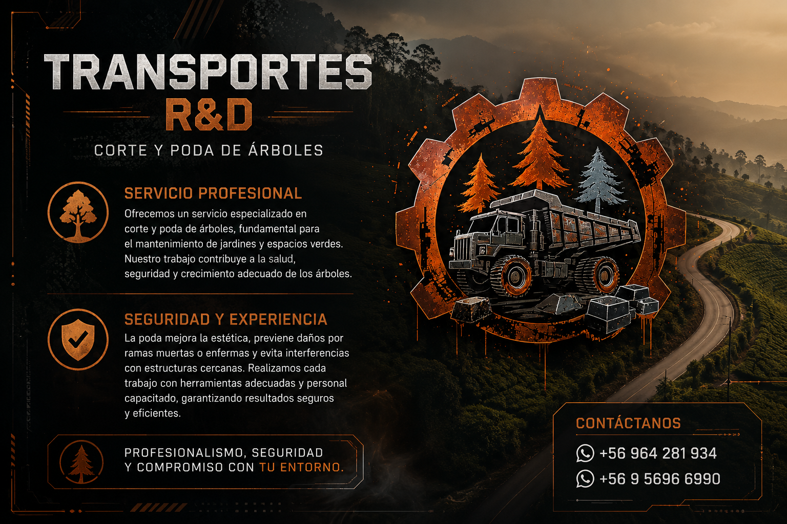
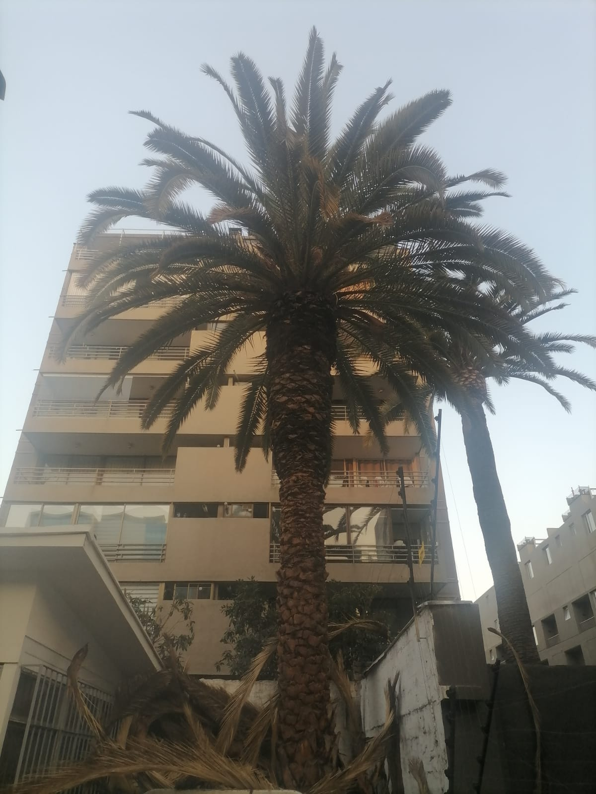
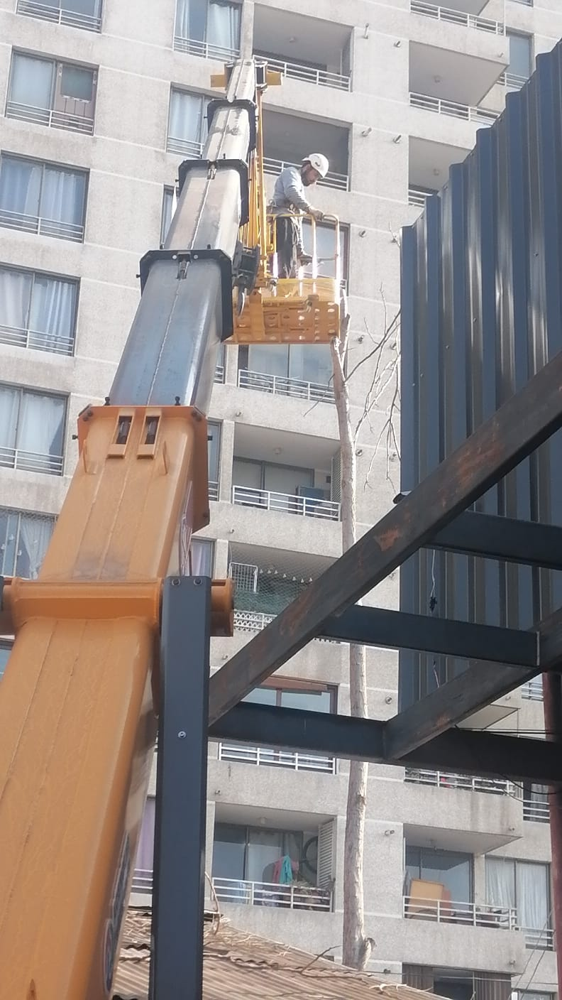
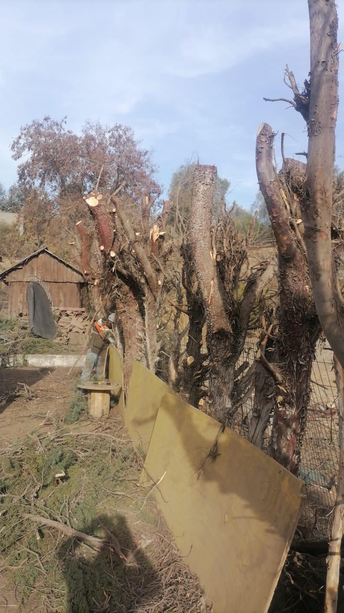
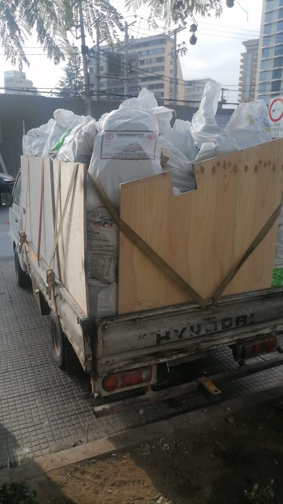
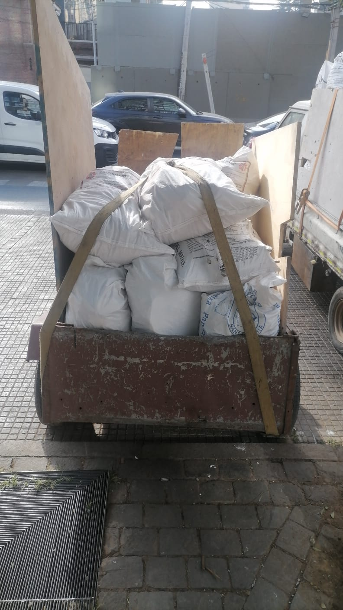
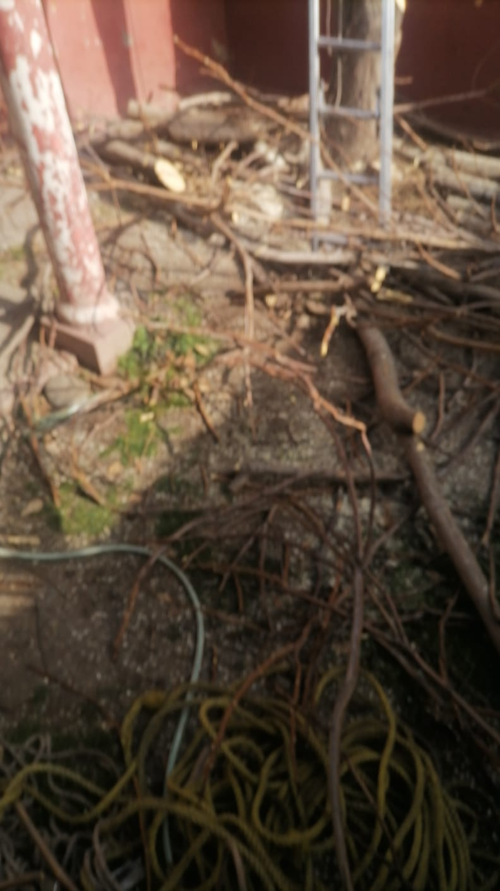

Especialistas en transporte, manejo responsable de residuos, poda, corte de árboles y gestión de metales con cumplimiento normativo y puntualidad rigurosa. Asegurando un trabajo profesional destacando la poda y tala, seguridad en el área, orden y soluciones definitivas.
Operaciones ágiles con equipos certificados y soluciones reales que tu empresa, constructora, institución, club deportivo o junta vecinal necesita.
No nos limitamos a cortar ramas de forma ambigua. Diseñamos soluciones que liberan tus espacios, mejoran la entrada de luz y devuelven una excelente estética visual frente a tus vecinos. Realizamos un saneamiento vegetal profundo, despejando áreas críticas con máxima seguridad y profesionalismo.
No solo nos llevamos las ramas y escombros de la faena; limpiamos a fondo, despejamos el lugar y hacemos un saneamiento del espacio entregándotelo impecable. Además, cooperamos con el medio ambiente integrando de forma circular los desechos en centros autorizados para su reciclaje y reutilización.
Compramos fierro, aluminio, galvanizado, bronces y latas en general con tasación transparente y pago inmediato. Nuestro compromiso central es ir un paso más allá en todo lo que hacemos: cuando nos contratas, te garantizamos naturalidad, efectividad y la seguridad de que entregamos soluciones y NO problemas.
En TRANSPORTES R&D nos enfocamos en ser tu primera opción en servicios de transporte y manejo de residuos. Nos destacamos en la poda y tala de árboles por nuestra responsabilidad, puntualidad estricta y un trato directo que soluciona cada requerimiento sin burocracias.
Somos un equipo eficiente compuesto por 2 profesionales calificados para el trabajo en terreno, garantizando una operación eficaz y coordinada.
Responsable directo en terreno, experto certificado en el área de corte, poda y tala compleja, enfocado en dar soluciones inmediatas a la comunidad.

Evidencia real de nuestras maquinarias, faenas con alta protección y efectividad operativa.

Resultado de una palmera podada por nuestro equipo de trabajo, realizada entre estructuras; casas y departamentos.

Ejecución controlada mediante camión pluma elevador en sectores confinados y estructuras de difícil acceso.

Troceo controlado con motosierra y uso de barreras de resguardo estructural para proteger cierres perimetrales durante la faena.

Capacidad operativa de transporte con camiones listos para despejar la obra y mitigar el impacto vial en tiempo récord.

Clasificación y trincado estructural de fustes y ramas con eslingas de alta tenacidad para un traslado vial seguro.

Se realizará agrupación y ordenamiento del material vegetal en la zona de trabajo para facilitar un levante rápido y seguro ¡evitando obstrucciones!